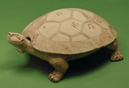

|  | Chinese (Han dynasty) Tortoise-Shaped Inkstone 206 B.C.-A.D. 220 Gray earthenware 4 inches high, 10 inches long William Hood Dunwoody Fund 32.54.4a,b |
- The tortoise-shaped inkstone is a CERAMIC
sculpture found in a tomb of the Han DYNASTY,
from the time when China was unified into the greatest empire in Asia.
- The artist's unique interpretation combines the ORGANIC
hand- built form of a tortoise with GEOMETRIC
patterns and symbols INCISED
on its shell.
- Han pottery figures, while modeled in clay, display characteristics
of tomb sculptures carved out of stone during the same period.
- Inkstones were used by scholars who practiced the revered art of writing
called CALLIGRAPHY.

Key ideas.
Where does it come from?
What does it look like?
How was it used?
How was it made?
Discussion questions.
Additional resources.
Select another piece.